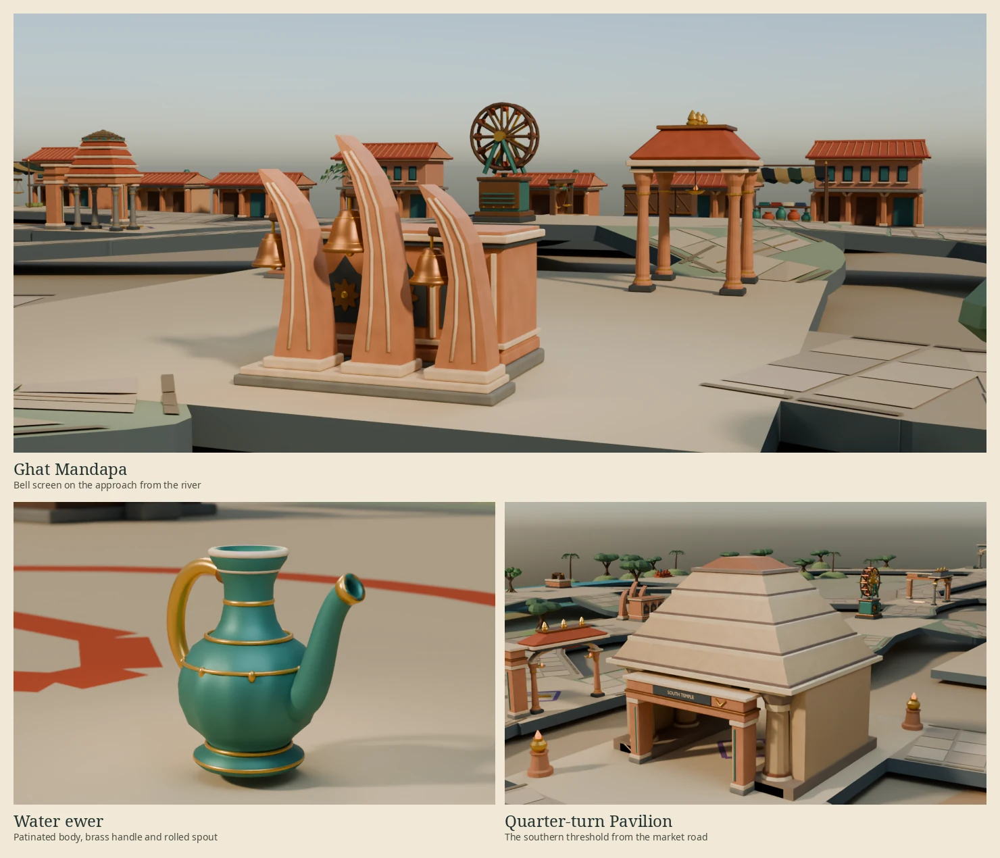

Ember Rite
Mandala Rift
A temple passage folds across a river market. Walk the dry bank, cross the reed ford, or turn through the pavilion.
Watch the district filmField index
Element studies
Loading the collection…
Blender
District in motion

Visual development
Concept boards
Production files